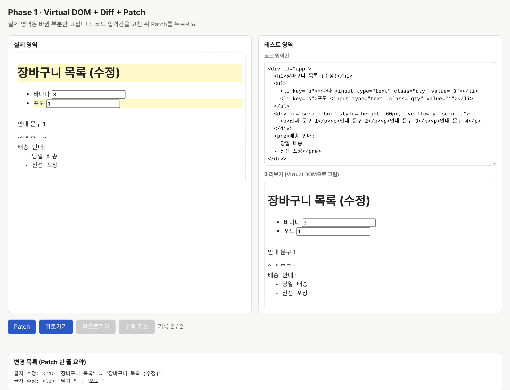

미니 React
🧩
Phase 1

✅
Phase 2
⚡
성능 실험실
클릭
→
Virtual DOM
→
Diff
→
Patch
→
Layout
→
Paint
→
화면
미니 React
브라우저
목록 1,000개 중 1개를 바꾸면
✏️ 부분 렌더링 (Virtual DOM)
1
DOM 수정 · 입력값 유지
🔁 전체 렌더링 (innerHTML)
2,001
새로 만든 노드 · 입력값 사라짐
검증
202/202
테스트
51/51
검증 항목
44/44
요구사항 추적
85.7%
뮤테이션
0
UI 프레임워크